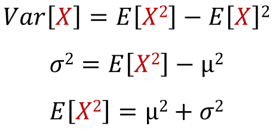
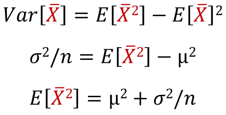
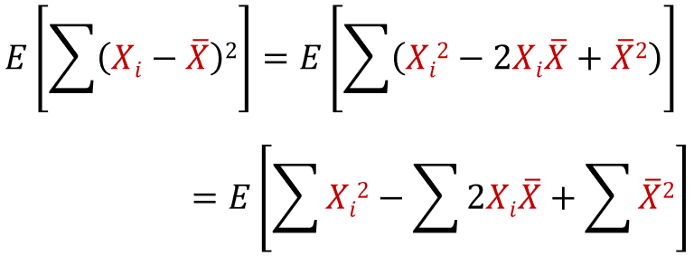
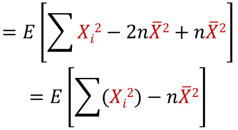
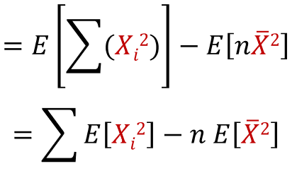
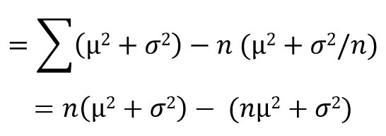
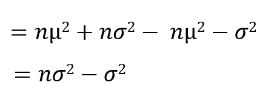
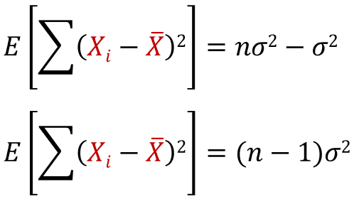
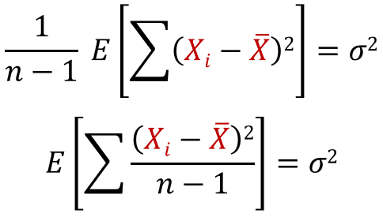
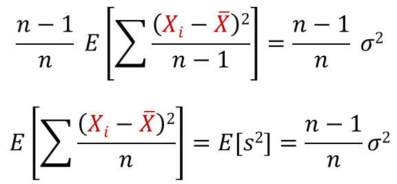

For this derivation, you have to get familiar with these variables:

For a population of size N and values Xi, the population variance and the sample variance are calculated using the formula below:

In many practical situations, the true variance of a population is not known a priori and must be computed somehow. When dealing with extremely large populations, it is not possible to count every object in the population. Lets try to derive an equation for the expected value of the population variance, E[σ^2], using the sample mean rather than the population mean, and using the size of the sample n rather than the population size N. We start our derivation by the formula of variance:

The law of large numbers states that the larger the size of the sample, the more likely it is that the sample mean will be close to the population mean, so we are going to assume that E[X̄] = μ = E[X]. Also, in statistics, it is commonly assumed that observations in a sample are effectively iid, meaning that all the Xi variables taken from the population will have the same variance as the population (σ^2). We can rewrite our variance formula like this:
Since the observations are iid, then var[X̄] = (σ^2)/n (click here to learn why):
Our next step is to find the sum of (Xi-E[X̄])2 (they are added n times):
Since they are added n times, then X̄ = Σ Xi/n:
We can use the linearity of expectation here:
We can substitute in the values we got ealier:
We can simplify this further:
Looks like we got the sum of (Xi-E[X̄])2 in very simple terms:
Lets make the population variance the subject of this equation:
The above equation tells us that when the sum of (Xi-E[X̄])2 is divided by (n - 1), we are expected to get the population variance. This is how we get the population variance using the sample mean and the sample size. If we multiply both sides with (n-1)/n, we get:
Hence the sample variance gives an estimate of the population variance that is biased by a factor of (n-1)/n. For this reason, the sum of (Xi-E[X̄])2/n is referred to as the biased sample variance. Using (n - 1) instead of n in the formula for sample variance yields the unbiased sample variance, this is called Bessel's correction.